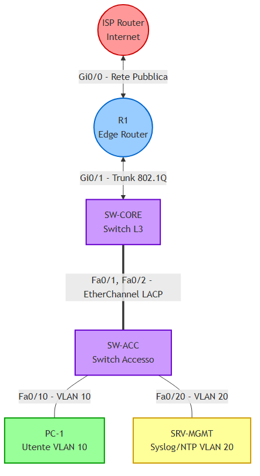

OBIETTIVO: Il presente laboratorio ha lo scopo di documentare e implementare un'infrastruttura di rete aziendale completa, integrando i protocolli di Layer 2, Layer 3, i Servizi IP e le policy di Sicurezza richieste dagli standard CCNA.
L'infrastruttura simulata riproduce un ambiente aziendale strutturato, implementando i seguenti moduli:
Di seguito è riportato lo schema logico della rete. Si richiede di replicare la topologia su ambiente di simulazione (PNETLab o Cisco Packet Tracer), rispettando l'assegnazione delle interfacce.

IMPORTANTE - Cablaggio Cruciale: Assicurati di usare due cavi separati tra
SW-COREeSW-ACCsulle porteFa0/1eFa0/2per poter configurare correttamente l'EtherChannel!
Usa questa tabella come riferimento unico per assegnare gli indirizzi IP durante il lab.
| Dispositivo | Interfaccia / VLAN | Indirizzo IP | Subnet Mask | Gateway (Next Hop) |
|---|---|---|---|---|
| R1 | Gi0/0 (Verso ISP) |
203.0.113.2 |
255.255.255.252 |
203.0.113.1 (Default) |
| R1 | Gi0/1.10 (VLAN 10) |
192.168.10.254 |
255.255.255.0 |
N/A |
| R1 | Gi0/1.20 (VLAN 20) |
192.168.20.254 |
255.255.255.0 |
N/A |
| PC-1 | NIC (VLAN 10) | DHCP | DHCP | DHCP |
| SRV-MGMT | NIC (VLAN 20) | 192.168.20.100 |
255.255.255.0 |
192.168.20.254 |
| ISP | Gi0/0 (Verso R1) |
203.0.113.1 |
255.255.255.252 |
N/A |
Configurazione dell'infrastruttura di commutazione locale. Le VLAN garantiscono l'isolamento dei domini di broadcast, mentre l'EtherChannel fornisce ridondanza e incremento della larghezza di banda.
NOTA:
I seguenti comandi devono essere eseguiti su entrambi gli switch di rete (SW-COREeSW-ACC):
enable
configure terminal
! 1. Creazione delle VLAN
vlan 10
name DATI_UTENTI
vlan 20
name MANAGEMENT
exit
! 2. Creazione EtherChannel (LACP) tra gli switch
interface range FastEthernet 0/1 - 2
channel-group 1 mode active
exit
! 3. Configurazione del Trunk sul canale aggregato
interface Port-channel 1
switchport mode trunk
switchport nonegotiate
switchport trunk allowed vlan 10,20
exit
ATTENZIONE:
I seguenti comandi sono destinati esclusivamente allo switch di distribuzione (SW-CORE):
! Porta verso the Router R1
interface GigabitEthernet 0/1
switchport mode trunk
switchport nonegotiate
switchport trunk allowed vlan 10,20
exit
! SW-CORE deve essere il Root Bridge per evitare cicli
spanning-tree vlan 10,20 root primary
NOTA:
I seguenti comandi sono destinati esclusivamente allo switch di accesso (SW-ACC):
! Configurazione porta PC con Port Security
interface FastEthernet 0/10
switchport mode access
switchport access vlan 10
spanning-tree portfast
switchport port-security
switchport port-security maximum 2
switchport port-security violation restrict
switchport port-security mac-address sticky
exit
! Configurazione porta Server
interface FastEthernet 0/20
switchport mode access
switchport access vlan 20
spanning-tree portfast
exit
Implementazione del routing inter-VLAN tramite architettura Router-on-a-Stick e configurazione dell'accesso alla rete geografica tramite protocollo OSPF.
IMPORTANTE:
Le configurazioni descritte in questa sezione devono essere applicate al router di frontiera R1.
enable
configure terminal
! Accendiamo l'interfaccia fisica verso lo switch
interface GigabitEthernet 0/1
no shutdown
exit
! Sub-interface per la VLAN 10 (Utenti)
interface GigabitEthernet 0/1.10
encapsulation dot1Q 10
ip address 192.168.10.254 255.255.255.0
exit
! Sub-interface per la VLAN 20 (Management)
interface GigabitEthernet 0/1.20
encapsulation dot1Q 20
ip address 192.168.20.254 255.255.255.0
exit
! Interfaccia esterna (Verso l'ISP)
interface GigabitEthernet 0/0
ip address 203.0.113.2 255.255.255.252
no shutdown
exit
! Configurazione OSPF e Rotta di Default
router ospf 1
! Sicurezza: Evitiamo di inviare messaggi OSPF verso le LAN
passive-interface GigabitEthernet 0/1.10
passive-interface GigabitEthernet 0/1.20
! Annunciamo le nostre reti locali
network 192.168.10.0 0.0.0.255 area 0
network 192.168.20.0 0.0.0.255 area 0
! Iniettiamo la rotta di default nel dominio OSPF
default-information originate
exit
! Rotta statica globale per uscire su Internet
ip route 0.0.0.0 0.0.0.0 203.0.113.1
NOTA: Configurazione Router ISP (Simulazione Internet): L'ISP ha bisogno di un indirizzo IP, una loopback per simulare Google (
8.8.8.8) e, fondamentale, una rotta di ritorno verso i nostri IP pubblici NAT!
! Sul Router ISP
enable
configure terminal
interface GigabitEthernet 0/0
ip address 203.0.113.1 255.255.255.252
no shutdown
exit
! Loopback per simulare un sito Internet
interface loopback 0
ip address 8.8.8.8 255.255.255.255
exit
! La "Rotta di Ritorno" vitale per evitare i ping in Timeout!
ip route 0.0.0.0 0.0.0.0 203.0.113.2
Configurazione dell'assegnazione dinamica degli indirizzi IP per gli end-device e abilitazione della Network Address Translation (PAT) per la connettività esterna.
NOTA:
I comandi devono essere eseguiti sul router R1.
! 1. Definizione di quali interfacce sono "Dentro" e quali "Fuori"
interface GigabitEthernet 0/1.10
ip nat inside
exit
interface GigabitEthernet 0/1.20
ip nat inside
exit
interface GigabitEthernet 0/0
ip nat outside
exit
! 2. Creazione dell'Access-List per il NAT (Quali IP possono navigare?)
access-list 1 permit 192.168.10.0 0.0.0.255
access-list 1 permit 192.168.20.0 0.0.0.255
! 3. Abilitazione del PAT (Port Address Translation) sull'interfaccia esterna
ip nat inside source list 1 interface GigabitEthernet 0/0 overload
! 4. Configurazione del DHCP Server per i dipendenti (VLAN 10)
ip dhcp excluded-address 192.168.10.254
ip dhcp pool POOL_UTENTI
network 192.168.10.0 255.255.255.0
default-router 192.168.10.254
dns-server 8.8.8.8
exit
Implementazione delle direttive operative e di sicurezza: sincronizzazione del protocollo NTP, inoltro dei log di sistema verso il server centralizzato SRV-MGMT e hardening degli accessi remoti.
SUGGERIMENTO:
Verificare che il serverSRV-MGMTdisponga dell'indirizzamento IP statico192.168.20.100con Default Gateway192.168.20.254.
! Sul router R1
configure terminal
! 1. Allineamento orario (Il Metronomo)
ntp server 192.168.20.100
! 2. Centralizzazione dei Log (Il Diario)
logging host 192.168.20.100
service timestamps log datetime msec
logging trap notifications
! 3. Hardening degli Accessi (SSH)
hostname R1
ip domain-name sorint.local
crypto key generate rsa modulus 2048
username admin privilege 15 secret Sorint2026!
line vty 0 4
login local
transport input ssh
exit
Fase di collaudo e verifica del corretto instradamento dei pacchetti attraverso l'infrastruttura. Utilizzare i seguenti comandi diagnostici:
192.168.10.0/24.ping 8.8.8.8 per confermare il corretto funzionamento di VLAN, Routing inter-VLAN e NAT.show etherchannel summary e accertarsi che il Port-channel Po1 si trovi in stato logico (SU).show spanning-tree vlan 10 e verificare la presenza della dicitura "This bridge is the root".show ip nat translations durante un test ICMP da PC-1 verso l'esterno per osservare la corretta traslazione PAT dell'IP sorgente privato.show ntp status per verificare che lo strato di sincronizzazione risulti "synchronized".ATTENZIONE:
In caso di anomalie (es. "Request Timeout" durante il test ICMP), verificare attentamente la presenza e la correttezza della rotta di ritorno statica configurata sul router ISP.